Context
The Survey
890 Australian visual artists and creative practitioners on generative AI — adoption, impact, concerns, and policy preferences.
Demographics
85% of respondents are visual artists or craftspeople
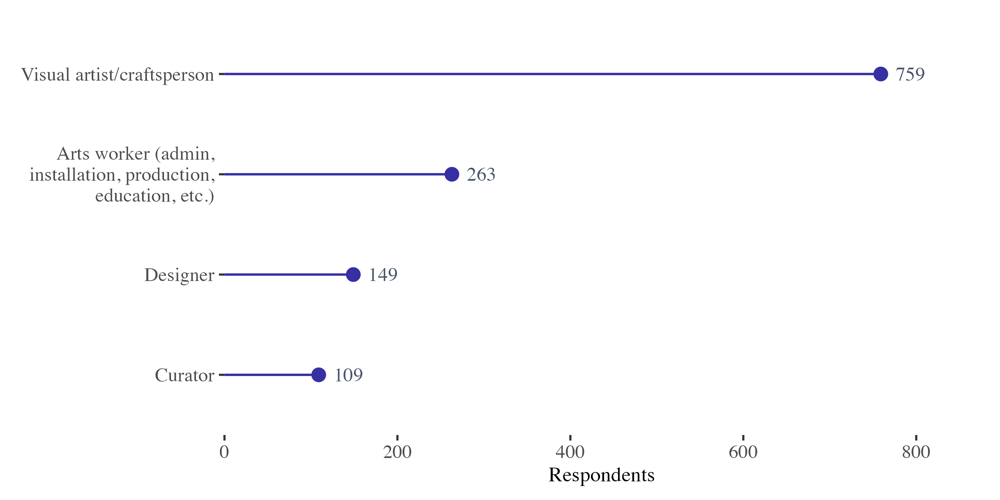
Demographics
28% of respondents live regionally or remotely
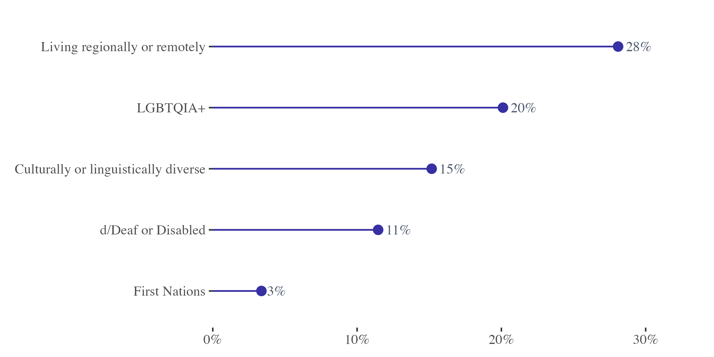
Adoption
Who Uses Generative AI?
Nearly half of creative practitioners now use AI tools, though the extent varies widely.
Adoption
46% of creative practitioners use generative AI
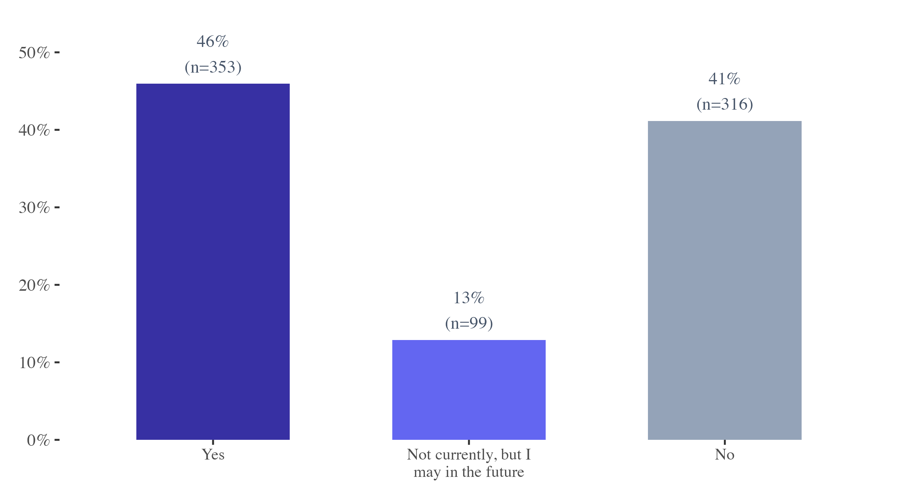
Adoption
Editing and drafting dominate — only 6% use AI for final artwork
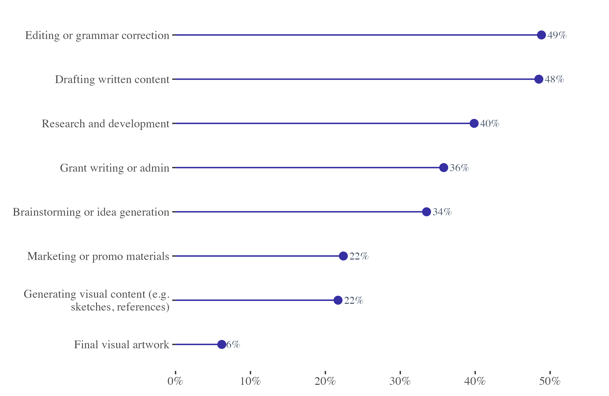
Adoption
Saving time is the primary motivation (36%)
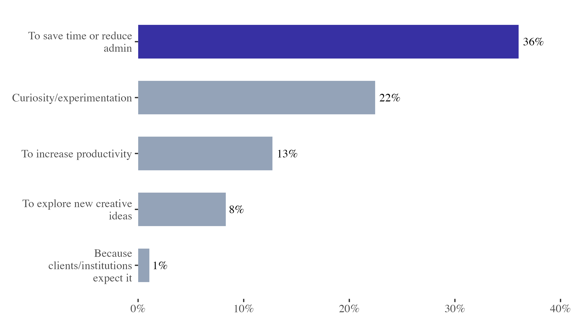
Adoption
81% say AI influences less than 10% of their final work
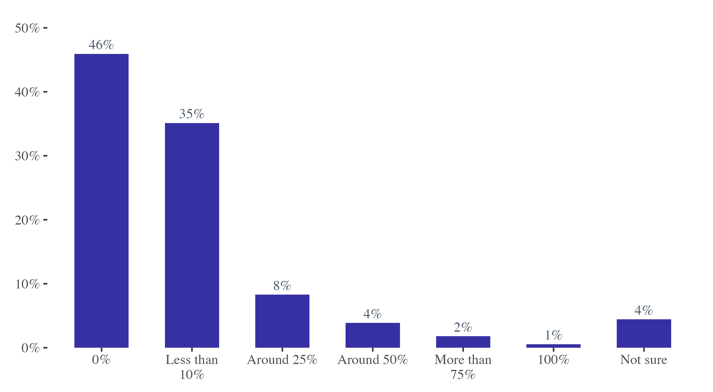
Adoption
ChatGPT dominates: mentioned by 60% of respondents
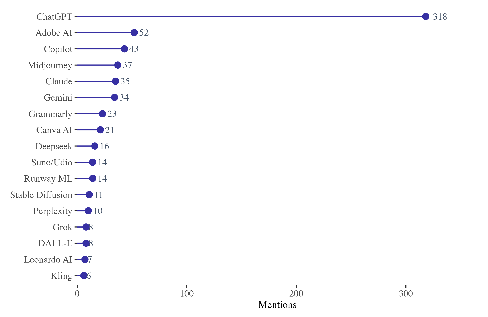
Impact
How Has AI Affected Visual Artists?
Real disruption across work, income, trust, and authorship.
Impact
Time savings lead, but 32% report no positive impact

Impact
71% don't know if their work was used to train AI
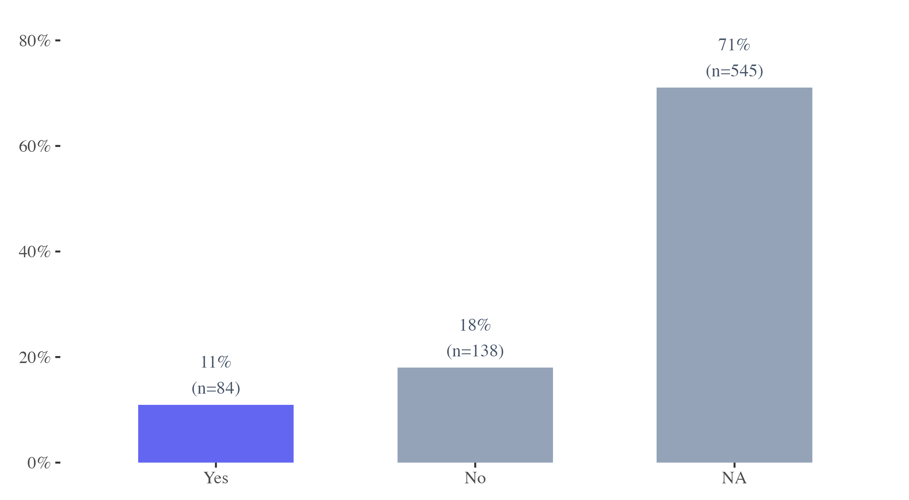
Impact
38% report reduced trust in originality as AI's biggest impact
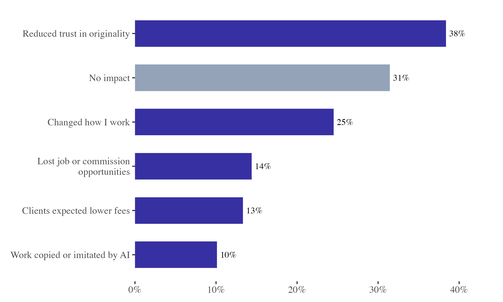
Themes
Admin utility and IP concerns dominate open responses
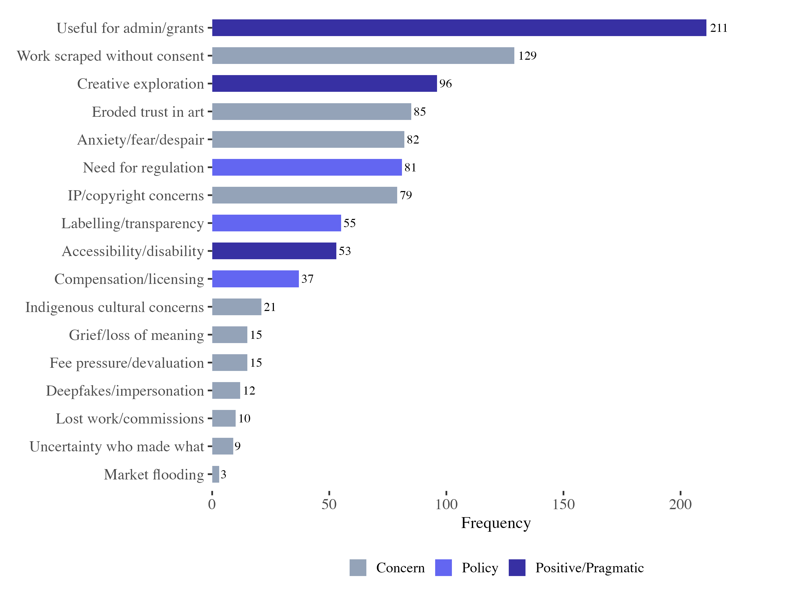
Policy
What Should Be Done?
Artists are united on transparency, compensation, and enforceable regulation.
Policy
85% want visible 'generated by AI' labelling
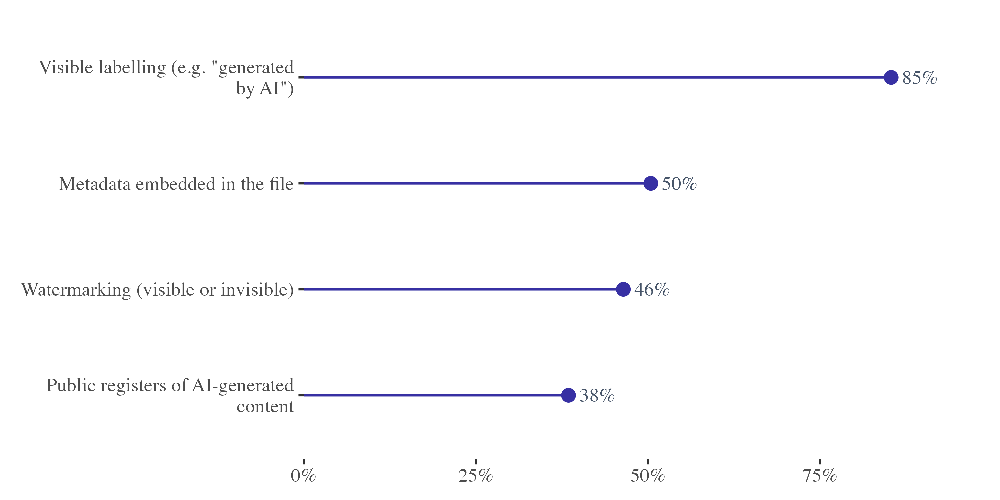
Policy
71% say AI content should always be disclosed
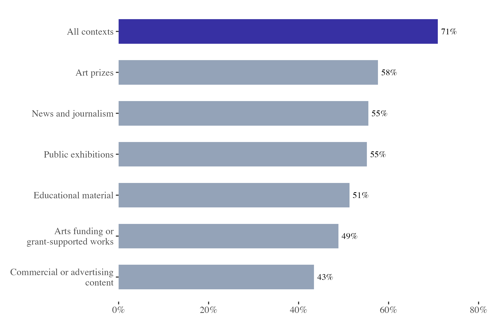
Policy
Platform opacity is the #1 barrier (76%)
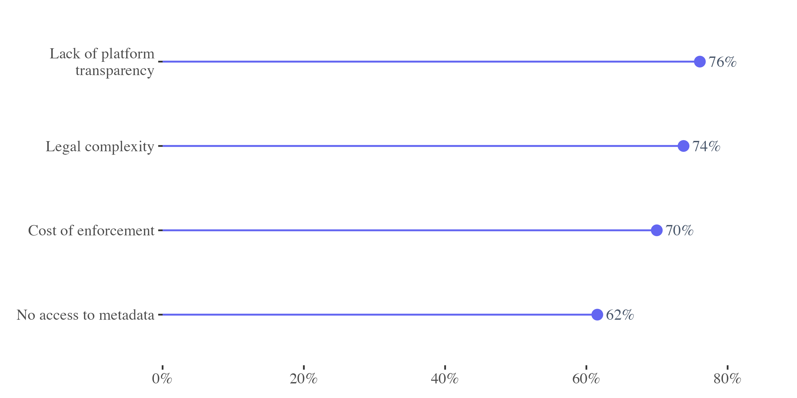
Policy
Artists want binding rules: 69% support a Code of Practice
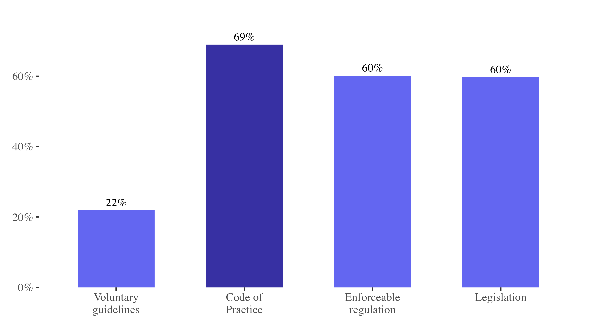
Policy
73% support compensation when their work trains AI
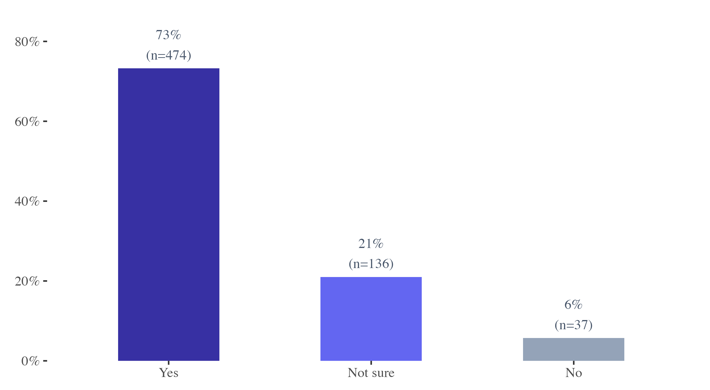
Policy
50% are unsure about collective licensing — an education opportunity

Summary
Five Key Findings
- 46% adoption — primarily for editing and drafting, not final artwork creation
- Real economic impact — lost commissions, fee pressure, market saturation
- Opacity and vulnerability — 71% don't know if work was scraped; 76% cite platform opacity
- Strong policy consensus — 85% want labelling, 73% support compensation, 69% want regulation
- Sector is divided — some embrace AI as creative tool; many see existential threat to authorship
NAVA · 2025
The Creative Reckoning
Australian artists are calling for transparency, compensation, and enforceable protections as generative AI reshapes the visual arts sector.
Ben Eltham · research.monash.edu
Charles Crabtree · charles.crabtree@monash.edu · charlescrabtree.org